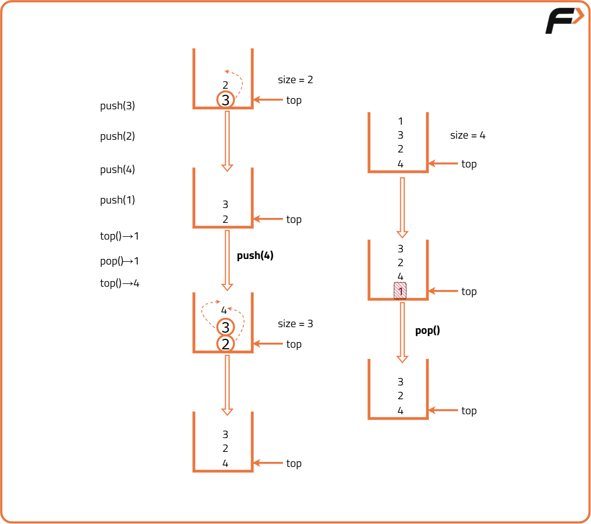

Implement Stack using single Queue
Problem Statement:
Implement a Last-In-First-Out (LIFO) stack using a single queue. The implemented stack should support the following operations: push, pop, top, and isEmpty.
Implement the QueueStack class:
Examples
Example 1: Input: ["QueueStack", "push", "push", "pop", "top", "isEmpty"] [[], [4], [8], [], [], []] Output: [null, null, null, 8, 4, false] Explanation: QueueStack stack = new QueueStack(); - stack.push(4); - stack.push(8); - stack.pop(); // returns 8 - stack.top(); // returns 4 - stack.isEmpty(); // returns false Example 2: Input: ["QueueStack", "isEmpty"] [[]] Output: [null, true] Explanation: QueueStack stack = new QueueStack(); - stack.isEmpty(); // returns true
Disclaimer: Here is the practice link to help you assess your knowledge better. It's highly recommend trying to solve it before looking at the solution.
Approach
Algorithm
- Data Structure Used: A single queue will be used to store the elements.
- Push(x): Insert the element x into the queue. To maintain the stack order:
- Run a loop that iterates
size() - 1times, wheresize()is the current number of elements in the queue. - In each iteration, remove the front element and add it back to the rear of the queue. This ensures that the most recently added element is always at the front of the queue.
- Pop(): Remove and return the front element of the queue, which corresponds to the top of the stack.
- isEmpty(): Return
trueif the queue is empty, andfalseotherwise.

Code
#include <bits/stdc++.h>
using namespace std;
// Stack implementation using Queue
class QueueStack {
// Queue
queue<int> q;
public:
// Method to push element in the stack
void push(int x) {
// Get size
int s = q.size();
// Add element
q.push(x);
// Move elements before new element to back
for (int i = 0; i < s; i++) {
q.push(q.front());
q.pop();
}
}
// Method to pop element from stack
int pop() {
// Get front element
int n = q.front();
// Remove front element
q.pop();
// Return removed element
return n;
}
// Method to return the top of stack
int top() {
// Return front element
return q.front();
}
// Method to check if the stack is empty
bool isEmpty() {
return q.empty();
}
};
int main() {
QueueStack st;
// List of commands
vector<string> commands = {"QueueStack", "push", "push",
"pop", "top", "isEmpty"};
// List of inputs
vector<vector<int>> inputs = {{}, {4}, {8}, {}, {}, {}};
for (int i = 0; i < commands.size(); ++i) {
if (commands[i] == "push") {
st.push(inputs[i][0]);
cout << "null ";
} else if (commands[i] == "pop") {
cout << st.pop() << " ";
} else if (commands[i] == "top") {
cout << st.top() << " ";
} else if (commands[i] == "isEmpty") {
cout << (st.isEmpty() ? "true" : "false") << " ";
} else if (commands[i] == "QueueStack") {
cout << "null ";
}
}
return 0;
}Complexity Analysis
Time Complexity:
Push operation: O(n) (where n is the number of elements in the queue at that time) because every time an element is pushed, all the elements in the queue are popped from the front and pushed in the back again.
Pop operation: O(1) as constant operations are performed.
Top operation: O(1) as constant operations are performed.
IsEmpty operation: O(1) as constant operations are performed.
Space Complexity: O(k) for storing k elements in the queue.